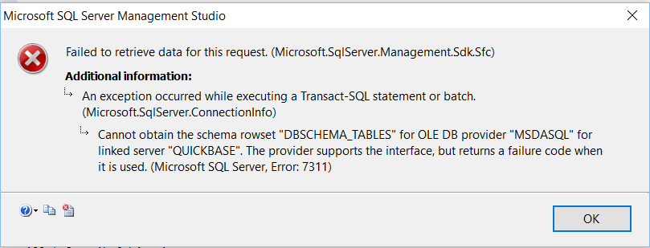

Application Note for QuNect ODBC for QuickBase
Cannot obtain the schema rowset "DBSCHEMA_TABLES" for OLE DB provider MSDASQL for linked server "QUICKBASE"

The error Cannot obtain the schema rowset "DBSCHEMA_TABLES" for OLE DB provider MSDASQL for linked server "QUICKBASE" occurs when QuNect ODBC for QuickBase cannot make a network connection to Quickbase. The linked server will test successfully. Clicking the QuNect ODBC for QuickBase "Test Connection" button in the ODBC DSN configuration dialog will yield a successful test. But SQL Server itself cannot access the list of tables in Quickbase. The most common cause is that the Windows user that the SQL Server service is running as does not have permission to access the Internet. One way to resolve this is to restart SQL Server using your own user credentials. The other option is to contact your network administrators and have them allow the SQL Server user account to have Internet access.